| Criteria | Weights | A | B | CR |
|---|---|---|---|---|
| —Alternatives | 100% | 28.33% | 71.67% | 7.34% |
| –C1 | 28.76% | 3.6% | 25.17% | 0% |
| –C2 | 14.31% | 2.38% | 11.92% | 0% |
| –C3 | 6.45% | 5.53% | 0.92% | 0% |
| –C4 | 50.48% | 16.83% | 33.66% | 0% |
A matemática da AHP para a escolha coerente
Luciane Ferreira Alcoforado, Matemática, Especialista na linguagem R
Ou isto ou aquilo - Cecília Meireles
Ou se calça a luva e não se põe o anel, ou se põe o anel e não se calça a luva!
Ou se tem chuva e não se tem sol, ou se tem sol e não se tem chuva!
Quem sobe nos ares não fica no chão, quem fica no chão não sobe nos ares.
É uma grande pena que não se possa estar ao mesmo tempo nos dois lugares!
Ou guardo o dinheiro e não compro o doce, ou compro o doce e gasto o dinheiro.
Ou isto ou aquilo: ou isto ou aquilo… e vivo escolhendo o dia inteiro!
Não sei se brinco, não sei se estudo, se saio correndo ou fico tranquilo.
Mas não consegui entender ainda qual é melhor: se é isto ou aquilo.
Bem-vindos ao Mundo das Escolhas! ✨
Quem nunca teve dúvidas sobre o que escolher? 🤦♀️ Pense em escolhas simples.

O Dilema Universal da Decisão 🤔
Viver é tomar decisões a todo momento.
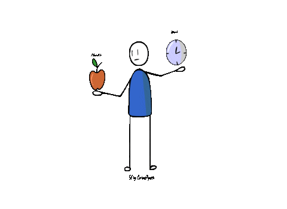Escolhas que levam ao arrependimento 😅
Deixar-se levar pelo impulso/medo (emoções)
Falta de propósito/objetivo
Transferir a responsabilidade para outros
Não analisar os cenários/parâmetros
Prazer, sou Luciane! 🙋♀️
Sou matemática por formação e atuo como professora na UFF e na AFA. Minha área de especialização é a matemática, a otimização e a estatística.
Compartilho conhecimento! 🙋♀️
Sou autora de diversos livros sobre a linguagem R.
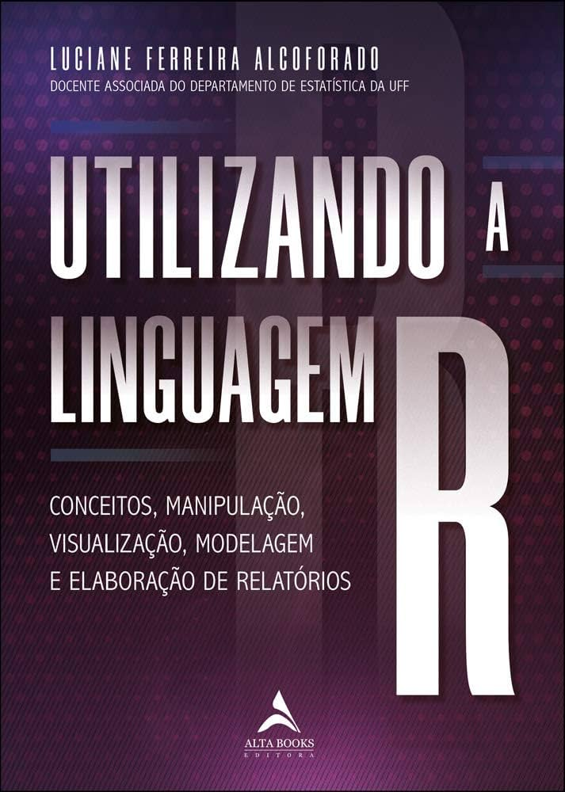https://www.amazon.com.br/Utilizando-linguagem-manipulação-visualização-elaboração/dp/8550814423
Mandalas 🙋♀️

Livro Mandala
AHP aplicada 🙋♀️
Um deles é sobre o método que abordaremos hoje.

Livro AHP
Método AHP criado por Thomás Saaty 💡
A boa notícia é que não é preciso ser um gênio para organizar nossas decisões.
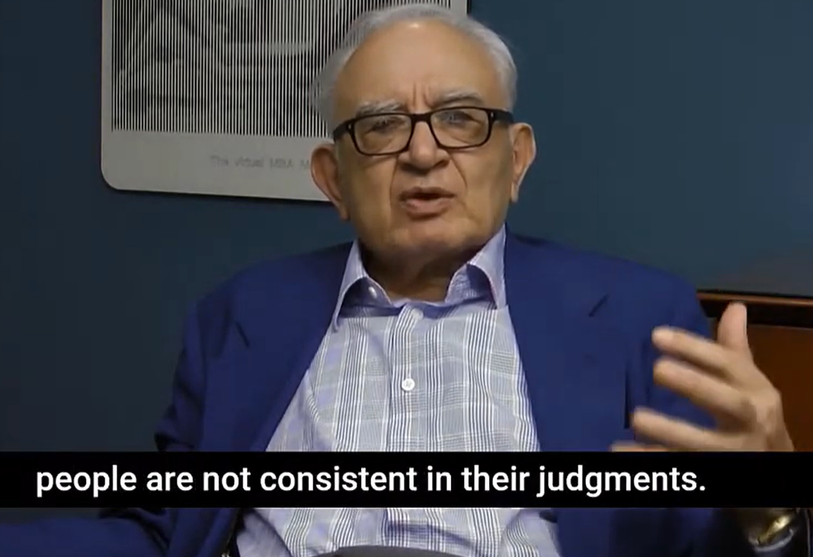
Professor Thomas L. Saaty (1926-2017)
“Nascido em Mosul, no Iraque (então sob administração britânica), em 1926, Saaty trilhou uma trajetória acadêmica singular. Ele obteve seu Mestrado em Física e seu PhD em Matemática pela renomada Yale University, além de ter estudado na Universidade de Paris. Ele era um visionário que percebeu que o maior desafio da tomada de decisão está em medir o Intangível.”
“Ele criou o Analytic Hierarchy Process (AHP) como uma solução matemática para os problemas mais complexos do mundo — do planejamento estratégico à alocação de recursos.”
A Motivação de Saaty: O Dilema do Desarmamento
Durante acordos entre EUA e União Soviética, era difícil decidir: “Quantos tanques equivalem a quantos aviões?”
Economistas e teóricos de jogos não conseguiam responder com rapidez ou clareza — faltava uma forma prática de comparar itens diferentes.
Saaty percebeu que usamos comparações intuitivas para decidir. Isso o levou a criar o AHP: um método para transformar julgamentos humanos em decisões estruturadas.
Professor Thomas L. Saaty (1926-2017)
“Em essência, a missão de Saaty, refletida na fundação que criou, era ajudar as pessoas a fazerem escolhas mais racionais. O AHP é a disciplina que nos salva de sermos dominados pelas ambiguidades e nos dá um mapa numérico para o nosso propósito.”
Aplicativo AHPWIZARD 🙋♀️
E tenho um aplicativo de apoio à decisão registrado no INPI.
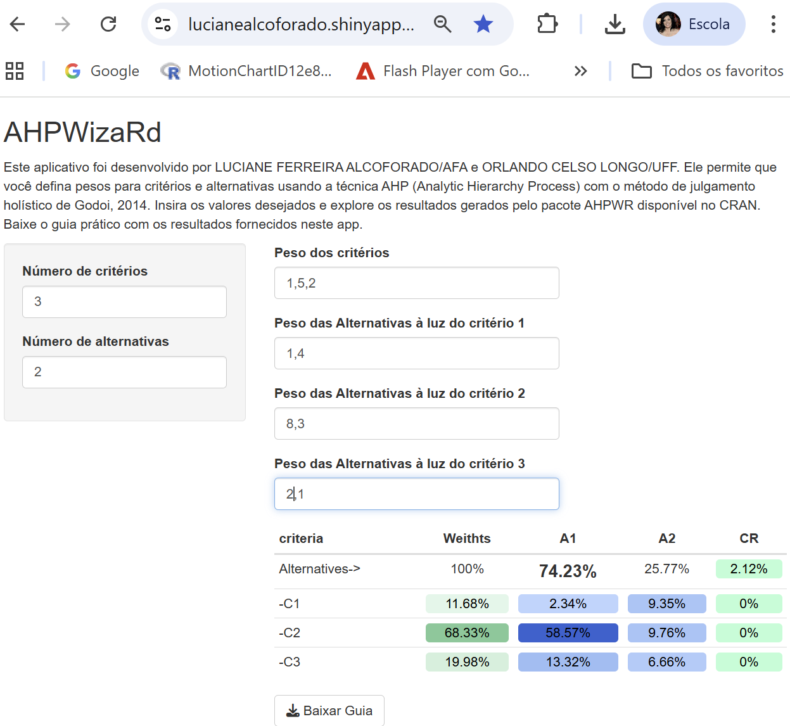AHPWIZARD
Falando em Cálculos… 🤓
…a matemática da decisão tem seus fundamentos profundos!
\[ w_i = \frac{1}{n} \sum_{j=1}^{n} \frac{a_{ij}}{\sum_{k=1}^{n} a_{kj}} \]
😅 Esta é apenas uma amostra de que, sim, existe uma lógica estruturada por trás, um “motor” que sustenta a metodologia.
O Propósito de Nossa Conversa Hoje 🎯
Meu objetivo é demonstrar que é possível aprimorar a forma como se toma decisões, usando a lógica.
Não se trata de anular a intuição, mas de oferecer-lhe um direcionamento mais claro.

Afinal, quem não deseja tomar decisões mais acertadas e com maior segurança? 😉
Intuição e Valores 🙈
Intuição: ferramenta poderosa, conexão com nossos sentimentos mais profundos.
Valores: Quem eu sou, o que eu valorizo e o que estou disposta a sacrificar nesta escolha específica?

Histórias Que Nos Fazem Refletir 😂
- A busca pelo tênis perfeito: A Luiza precisa de um tênis novo. Em vez de simplesmente comprar o mais barato ou o que está na moda, ela busca por conforto.
Intui + ação 😂
- Intuição: Ir até a loja do João do Bola Branca.
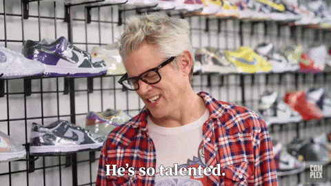
Passo 1: O Ponto de Partida – O Objetivo
Pergunte: O Que Devo Ser/Fazer?”
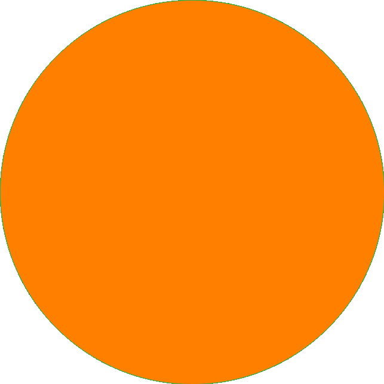Passo 2: O Desdobramento – Os Critérios
Pergunte: Quem Eu Sou e o Que Eu Valorizo?” (Ex: Custo, Prazer/Realização, Impacto, Tempo).
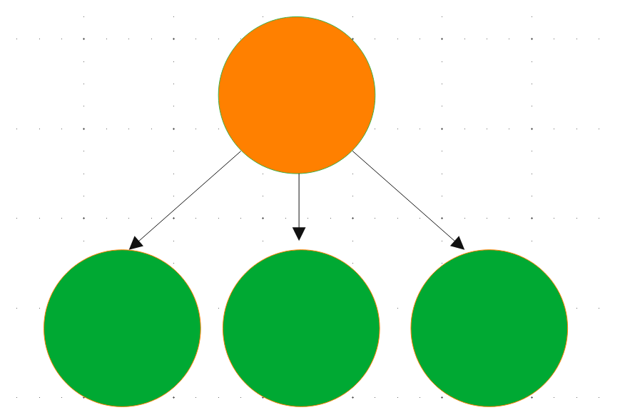Passo 3: A Estrutura – A Árvore Hierárquica
Mapa de ação: nossos valores abstratos em uma arquitetura lógica tridimensional.
Objetivo: Comprar um tênis
Critérios: 1-Conforto; 2-Preço; 3-Durabilidade
Alternativas: Os modelos disponíveis na loja
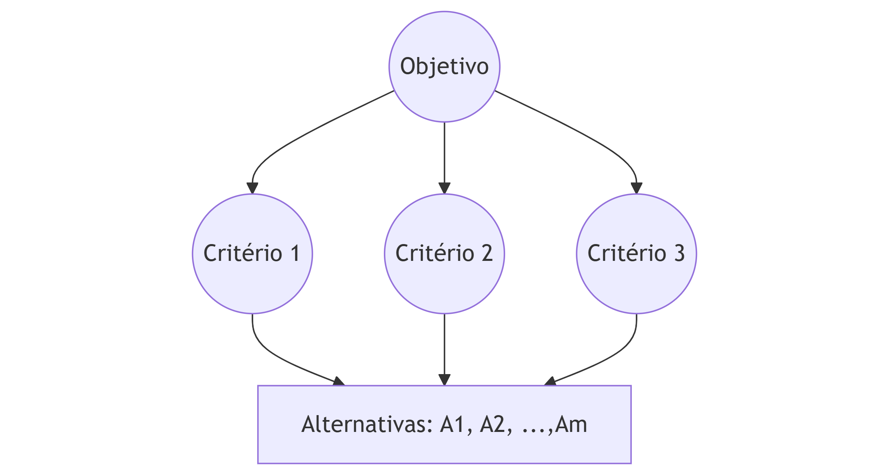Passo 4: Como Ponderar o Que É Mais Importante? (A Comparação) ✨
Agora vem a etapa crucial: a comparação. Em vez de atribuir uma pontuação absoluta, comparamos:
“O critério 1 é mais importante que o critério 2?
Quanto mais importante?”
A escala fundamental de Saaty✨
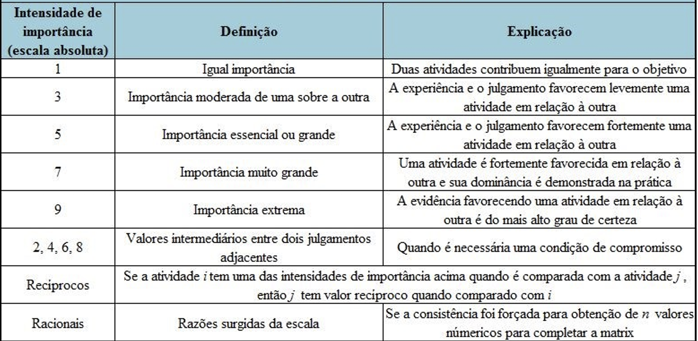Matriz de julgamentos
Confrontamos os critérios dois a dois: A-B; A-C e B-C.
Regra da reciprocidade: A x B: 5 então B x A: 1/5
| A | B | C | |
|---|---|---|---|
| A | 1 | ||
| B | 1 | ||
| C | 1 | ||
Objetivo: Comprar um tênis
A (Conforto) é quão mais importante que B (preço): 5 (importância essencial)
| A | B | C | |
|---|---|---|---|
| A | 1 | 5 | |
| B | 1/5 | 1 | |
| C | 1 | ||
Objetivo: Comprar um tênis
A (Conforto) é mais importante que B (preço): 5
A é pouco mais importante que C (durabilidade): 2
| A | B | C | |
|---|---|---|---|
| A | 1.00 | 5.00 | 2.00 |
| B | 0.20 | 1.00 | |
| C | 0.50 | 1.00 | |
Matemática como Guardiã da Integridade do seu julgamento
A (Conforto) é mais importante que B: 5
A é pouco mais importante que C (durabilidade): 2
B (preço) é moderadamente mais importante que C: 3
| A | B | C | CR | |
|---|---|---|---|---|
| A | 1.00 | 5.00 | 2.00 | |
| B | 0.20 | 1.00 | 3.00 | |
| C | 0.50 | 0.33 | 1.00 | |
| 0.40 |
Corrigindo o julgamento inconsistente
A razão de consistência deve ser menor do que 0.1
Erro na lógica: A é mais importante que B: 5;
B é moderadamente mais importante que C: 3;
A comparado com C deve ser > 5, por exemplo 7
| A | B | C | CR | |
|---|---|---|---|---|
| A | 1.00 | 5.00 | 7.00 | |
| B | 0.20 | 1.00 | 3.00 | |
| C | 0.14 | 0.33 | 1.00 | |
| Pesos | 0.73 | 0.19 | 0.08 | 0.06 |
Caso da IEDA: Da Moeda à Matriz 😕
Objetivo: Lançar seu livro
Critérios: Indefinidos
Alternativas: À tarde ou À noite?
Métodos não científicos: lançar uma moeda, usar um pêndulo, pedir opiniões.🤔
Ela precisa estabelecer critérios para sua escolha!!!
Mudar a pergunta de ‘Que horas devo lançar?’ para: ‘Quem eu sou e o que eu valorizo neste lançamento?’
Resgatando a IEDA
‘Quem eu sou e o que eu valorizo neste lançamento?’
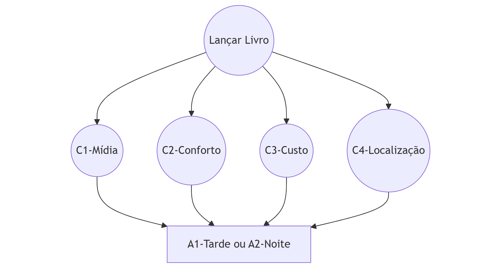Na prática
Mídia vs. Conforto: IEDA considera a Atenção da Mídia moderadamente mais importante que o conforto do Público.
(Se não tiver mídia, o evento perde impacto, mesmo que seja confortável), então ela atribui
valor 3.
| Mídia | Conforto | Custo | Localização | |
|---|---|---|---|---|
| Mídia | 1.00 | 3.00 | ||
| Conforto | 0.33 | 1.00 | ||
| Custo | 1.00 | |||
| Localização | 1.00 |
Os julgamentos da IEDA
| Mídia | Conforto | Custo | Localização | |
|---|---|---|---|---|
| Mídia | 1 | 3 | 5 | 1/3 |
| Conforto | 1/3 | 1 | 3 | 1/3 |
| Custo | 1/5 | 1/3 | 1 | 1/5 |
| Localização | 3 | 3 | 5 | 1 |
| Pesos AHP | 0.29 | 0.14 | 0.06 | 0.5 |
CR = 0.07 < 0.1 👍
O Julgamento Final: Como as Alternativas Performam?
Construa matrizes de julgamento para cada critério!
Matriz 1: Comparação das Alternativas (Tarde vs. Noite) sob a Lente de do CRITÉRIO 1 (Atenção da Mídia/Imprensa).
| Tarde | Noite | ||
|---|---|---|---|
| Tarde | 1 | 1/7 | |
| Noite | 7 | 1 | |
| Pesos AHP | 0.12 | 0.88 |
O Julgamento Final
como a vida é complexa, o AHP repete este processo para o Conforto, o Custo e a Localização. No final, a Matemática nos aponta a alternativa que, de forma racional e coerente, maximiza o valor da decisão.”
Passo 5: A Escolha Final ✅
O algoritmo indica qual opção se alinha melhor com suas próprias prioridades. Não é uma decisão imposta, é a sua, fundamentada!
Mesmo objetivo decisões diferentes
Objetivo: Ir à festa, Critérios: C1-Saúde e C2-Diversão; Alternativas: A-Ir ou B-Não ir
Vera: valoriza a diversão

João: valoriza a saúde
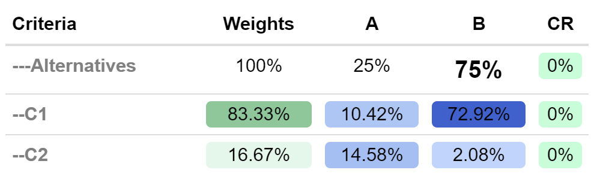
Sua Vida, Suas Melhores Escolhas 🏆
Essa estruturação não se restringe a grandes corporações ou projetos de engenharia.
Essa lógica é aplicável no cotidiano: * “Qual presente escolher para alguém especial?” 🎁 * “Qual lugar devo passar as férias?” 🎨 * “Devo aceitar aquela proposta de parceria?” 🤝 :::
O Equilíbrio Perfeito: Lógica + Intuição = Poder! 🤝
Com um mapa, evitam-se obstáculos e atinge-se o destino com maior certeza.
Pense assim: a intuição diz: “Vá por ali!”. A lógica pergunta: “Quais são meus valores?”. Juntas, elas o(a) conduzem na direção do seu propósito de vida! 😉
O Sr. Valéry e a Casa de Férias 🪦
“Eu quero uma casa com quatro portas, em quadrado, sem nenhuma parede. Evitarei perder-me em compartimentos. Seriam as férias perfeitas.”
“Só consigo repousar-me se não tiver que decidir nada, e para que isso aconteça é indispensável não existirem opções. Parece-me lógico.”
Trecho de “O senhor Valéry e a lógica” de Gonçalo M. Tavares, 2011.
A Matemática não promete, direciona 🧭
⚖️ 🤔Angústia: a dor de ter que escolher, a perda de não poder ter o “isto e o aquilo” ao mesmo tempo.
⚰️A fuga: O sonho da casa sem paredes, onde não há decisão. É o desejo do repouso final.
Mas a vida nos exige a responsabilidade de estarmos vivos.
Alinhamento: Analytic Hierarchy Process (AHP) é uma resposta digna. Não nos promete zerar a perda ou evitar o “isto ou aquilo”. Nossas matrizes e seus julgamentos transformam a angústia em direção numérica. O vetor que se obtém é a prova de que, ao aceitar o limite da vida, ganhamos a coerência do nosso Propósito.
🌳 ⚖️
Fechamento: Antes de decidir, reflita…
-
1. Toda escolha envolve perda.
Não dá para ter “isto e aquilo” ao mesmo tempo — mas dá para escolher com propósito. -
2. A intuição é valiosa, mas precisa de direção.
AHP oferece um mapa lógico para que nossas decisões sejam mais coerentes com quem somos. -
3. O que você valoriza define o que você decide.
Mais do que escolher certo, é escolher com consciência.
“Ao aceitar o limite da vida, ganhamos a coerência do nosso propósito.”
— Luciane Alcoforado
Fim
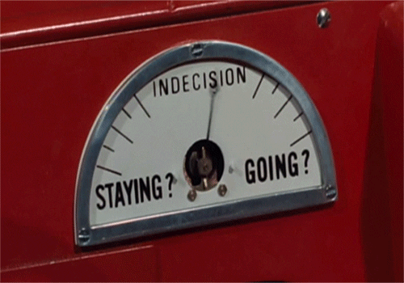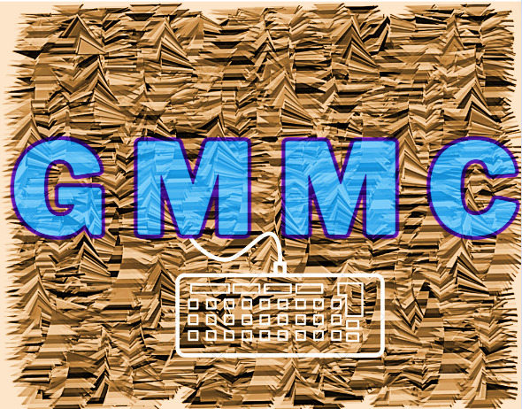